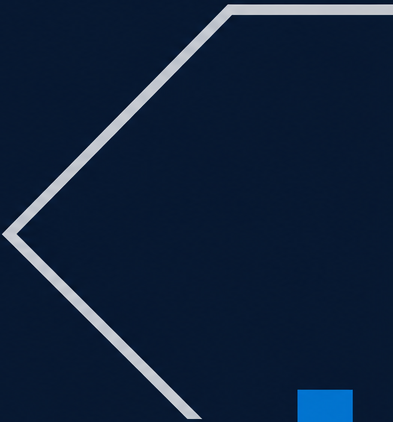
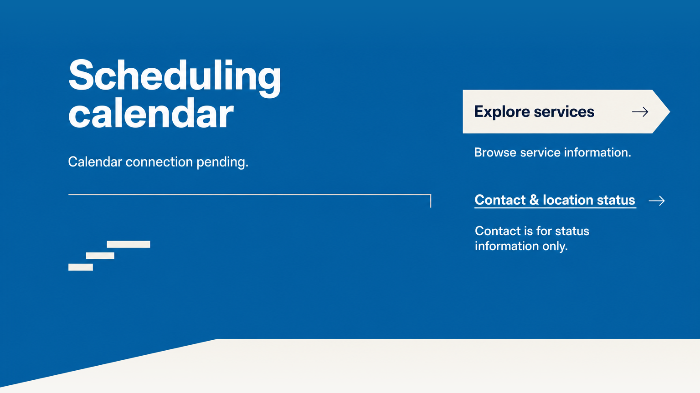
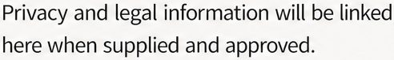

22 CODE regions and 0 raster assets to review: 0 extract, 0 inpaint.
Use a semantic section with the existing DOM id booking-hero and responsive container. Flat approved CSS token: ink #101E33. PNG is a design reference only. Do not ship frame as background, bake glyphs, copy generated texture/noise or force a1536:864 aspect ratio.
Use a section pseudo-element with background var(--action) and clip-path polygon(0 88.66%,41.08% 88.66%,100% 72.57%,100% 100%,0 100%) in a section-local overlay. Draw three aria-hidden electric-blue rectangles near lower-right, unequal heights 46:83:134 with equal width55 and baseline620 in the native coordinate system. Separate rectangles from the plane; these are not a chart.
One live h1 contains Appointment scheduling; desktop preferred break after Appointment. Load Source Sans 3 800. Native observed first line x148,y144 with width668; preserve heavy open-countered scale, never use raster text. Implement the reviewed typography in CSS: font-family: "Source Sans 3"; font-weight: 800; line-height: 1.04.
This region is the second line of the same h1, not another heading. Source Sans 3 800 with near1.0–1.08 line-height; preferred scheduling on line2. Mobile 44–48px with a two-line measure.
Live paragraph following the h1, exact Online booking is not yet available. Source Sans 3 600/700, silver #C7CBD0 or light on ink. Keep at least twice body hierarchy where desktop room allows; mobile26–28px. No badge, link or control role.
Live paragraph from manifest in Source Sans 3 400, light on ink, at least18px, max measure about40 characters on mobile and wider desktop. It has no interaction or scroll button. Implement the reviewed typography in CSS: font-family: "Source Sans 3"; font-weight: 400; line-height: 1.55.

Inline decorative SVG with viewBox 0 0 1536 864, polyline points 1536,106 1364,106 1142,331 1329,516; fill none; silver stroke8 at native scale. aria-hidden, focusable=false, pointer-events:none. Crop only right-edge geometry. Do not close into a widget.
Simple SVG path M129 112 H95 V371 H129 with electric stroke9, no fill. Anchor to the h1 group, not entire section height. On mobile scale to a 24px-wide bracket with3px stroke and text-safe gap.

Use a semantic section with the existing DOM id gohighlevel-calendar and responsive container. Flat approved CSS token: action #0666A5. PNG is a design reference only. Do not ship frame as background, bake glyphs, copy generated texture/noise or force a1536:864 aspect ratio.
Use surface #F7F6F3 pseudo-element polygon(0 98.61%,31.12% 86.34%,100% 86.34%,100% 100%,0 100%) over action-blue section. Position in closing space only; adjacent privacy shares exact surface token. No texture or raster crop.
Semantic a href=/services, exact Explore services label, separate decorative right-arrow SVG M0 12 H30 M19 1 L30 12 L19 23. Mineral fill with right angular end made by clip-path polygon(0 0,91% 0,100% 50%,91% 100%,0 100%); navy label Source Sans 3 700; minimum48px hit area. Clip only pseudo-element, not focus ring or text.
Live h2 Scheduling calendar in Source Sans 3 700, preferred two-line desktop break; keep smaller than hero. This is a status section, no invented calendar widget. Implement the reviewed typography in CSS: font-family: "Source Sans 3"; font-weight: 700; line-height: 1.04.
Live Source Sans 3 paragraph Contact is for status information only. directly below the Contact anchor with16–24px gap. Light on action-blue; coded minimum18px. No alternate channel or booking promise.
Semantic a href=/contact, exact Contact & location status, underlined live text and trailing thin arrow; no filled card. Use Source Sans 3 600/700, light on action blue. Two-line label allowed on mobile; arrow in its own flex slot, min48px hit area.
Live paragraph Calendar connection pending. below h2, Source Sans 3 400, light on action. No role button, tabindex, form or iframe; no animated loading indicator. Implement the reviewed typography in CSS: font-family: "Source Sans 3"; font-weight: 400; line-height: 1.55.
Live paragraph Browse service information. directly below Services anchor; keep its relationship separate from Contact link/caveat. Source Sans 3 400, light on action blue. Implement the reviewed typography in CSS: font-family: "Source Sans 3"; font-weight: 400; line-height: 1.55.
Draw three aria-hidden rectangles with mineral fill, about54x15 at(150,580),62x15 at(188,555),95x15 at(234,530). Keep no axis, labels or progress semantics. Add the separately thin open rule as described in frame supplemental recipe.
Use a semantic section with the existing DOM id privacy-note and responsive container. Flat approved CSS token: surface #F7F6F3. PNG is a design reference only. Do not ship frame as background, bake glyphs, copy generated texture/noise or force a1536:864 aspect ratio.
Live h2 Privacy & legal information in Source Sans 3 700 with preferred desktop line break after legal. Navy on mineral; native x175–605. Keep below hero scale. Do not render policy titles as links. Implement the reviewed typography in CSS: font-family: "Source Sans 3"; font-weight: 700; line-height: 1.04.

Live paragraph Privacy and legal information will be linked here when supplied and approved. Source Sans 3 400, charcoal on mineral, coded18px minimum and comfortable1.5–1.6 line-height; max about38–44ch. No invented legal/privacy claims.
Static live p Content pending using actual Playfair Display 500; keep as the only serif counterpoint and below hero scale. Native x834,y345. Do not style as a button, warning or consent control. Implement the reviewed typography in CSS: font-family: "Playfair Display"; font-weight: 500; line-height: 1.2.
Decorative SVG path M159 147 H127 V344 H159, electric stroke5, fill none. Anchor to title block with about24px text gap; on mobile3px stroke. No box around whole section.
# Book truthful successor r1 **Status: REVIEWED_SUCCESSOR_HANDOFF.** The independent reference review KEEPs all three native frames; the independent live review KEEPs each of the five fidelity layers for all three sections at commit 0e435d6. This is current-user-authorized Book handoff reconciliation, not historical customer, clinical/legal, QA or site-convergence approval. See HANDOFF.json for original review paths, hashes and scope. The candidate replaces the misleading booking promise and invented facility slots with a status-led typographic opening, open inactive blue scheduling surface with two real information routes, and concise quiet legal-content status. It keeps the Book frame IDs `01-booking-hero`, `02-gohighlevel-calendar`, `03-privacy-note` and existing DOM IDs `booking-hero`, `gohighlevel-calendar`, `privacy-note`. ## Review files - `section_manifest.json`: exact copy, publication prerequisites, inherited brand/hard-rule provenance, narrow successor overrides, actions and page flow. - `composition_map.json`: observed native geometry, load-bearing relationships, mobile behavior, protected quiet space and seams. - `extraction_plan.json`: every region is `verdict: code` / `medium: CODE`, zero asset files, concrete semantic/CSS/SVG recipes. - `prompts/*.md`: three fresh provider prompts; their coordinates record pre-render intent. The map and updated page flow record actual rendered geometry. - `refs/*.png`: three final native 1536×864 section frames; `page.png`: lossless native-width 1536×2592 stitch. - `refs/MANIFEST-CHECK.md` and `refs/FLOW-CHECK.md`: producer content/layout and continuity observations. - `render-status.json`, `render-logs/`: provider outcome and hashes. `qa/raw-provider/`: untouched provider output. `qa/normalize_backgrounds.py`, `qa/background-repair.json`, `qa/*-background-mask.png`: reproducible, bounded seam cleanup. - `qa/*/regions.json` and `overlay.png`: canonical segmenter diagnostics. Red numerical overlays are analysis only; they are absent from final refs. No asset crops are made from them. ## What wins Current user constraints and `successor_scoped_overrides` take priority over incompatible inherited provenance. The manifest wins for exact words/actions, the frames for visual arrangement, the page flow for transitions, and the map for load-bearing relationships. The package is now promoted for the scoped Book handoff after both independent reviews and current user authorization. Immutable candidate originals remain in research design_refs/successors/book-r1; prior canonical contracts are in the versioned history directory recorded in HANDOFF.json. The homepage `brand` and `hard_rules` were copied verbatim, not re-derived. Inherited `brand.logo_asset` and `brand.facility_assets` paths resolve from the original `design_refs/section_manifest.json`, not this successor directory. They are provenance only; none is loaded or consumed by this zero-raster candidate. Inherited references to facility imagery, Direction A exploration, and functional booking are explicitly overridden for this scoped candidate. There is an existing provenance tension: the canonical home prompt/native hero and typography role prose retain older serif-led Direction A material. Selected Direction B, **The Forward Standard**, is evidenced by `../../variation/refs/01-movement-forward.png`, `../../variation/refs/06-two-ways-forward.png` and the existing Book prompts. This candidate follows that selected hierarchy: strong Source Sans 3 headlines, selective Playfair Display counterpoint, squared brackets, angular fields and stepped bars. It does not alter either home contract or reopen direction exploration. The referenced `skills/design-os/reference/typography-contract.md` and `palette-contract.md` helper paths are absent in the local skill trees; the actual research typography/palette contracts and selected B prompts/frames were read instead. No new family or palette approval is claimed. ## Native render and cleanup All three frames were generated fresh with the canonical `skills/manifest-driven-design-refs-v3/scripts/gen_image.py`, `gpt-image-2`, quality `high`, at 1536×864. No current-code screenshot or original false photo was used as render input. Provider access succeeded on first attempts; no provider rerenders were needed. The provider introduced small flat-field color/noise drift. The initial stitch showed a blue tone break at 01→02 and a mineral tone break at 02→03. A first full-field normalization trial created visible dark fringes around protected glyphs and was rejected. The final cleanup restores raw provider core pixels and interpolates **only blank seam bands** to shared exact edge tokens. Hero rows 0–773, calendar rows 113–743 and privacy rows 121–863 remain byte-identical to provider output. All text, links, brackets, steps and keyline pixels are preserved. Raw images, hashes, masks and final procedure are retained. Final frames and both seams were reopened at original resolution after the repair. The repaired shared edge rows are exact `#0666A5` and `#F7F6F3`. Core navy is approximately `#071831`, core blue approximately `#025FA2`, and mineral approximately `#F8F6F4`; these are provider variations, not new color tokens. Code must use the approved flat `#101E33`, `#0666A5`, `#0877BE`, `#F7F6F3`, `#C7CBD0`, `#20272E` and approved focus/hover tokens. Never copy the residual generation texture, interpolate these bitmaps into runtime backgrounds, or add the rejected cleanup halos as shadows. Generated glyphs approximate the font request; later implementation must load actual Source Sans 3 and Playfair Display. ## Build recipes and relationships All imagery ownership is CODE. Native refs/stitch/raw outputs/masks are review evidence only and must never be shipped as website background or content assets. The hero uses one semantic H1, one availability paragraph and one supporting sentence. Its left bracket is tied to the H1 group; the silver angular contour and three unequal blue bars remain separate, decorative SVG/CSS. Keep the unavailable sentence close to the title and stronger than body copy. The blue handoff follows the observed polygon `(0,766) (631,766) (1536,627) (1536,864) (0,864)` in native coordinates. Scale the geometry relative to its section; do not scale the text as an image. The calendar uses an open static text/rule reserve plus a narrower offset navigation column. The long silver rule is a simple open polyline, not a widget border. A semantic anchor to `/services` has a mineral angular backing; a separate underlined anchor goes to `/contact`, with the visible status-only caveat immediately below. Clip only the backing pseudo-element so keyboard focus and label text remain intact. Use minimum 48px hit areas, a visible 3px approved focus ring and real anchor semantics. The mineral handoff follows `(0,852) (478,746) (1536,746) (1536,864) (0,864)`. The privacy section is an open asymmetric pair: Source Sans title left; lower right note with a thin silver rule, the page's one Playfair `Content pending` label, one body sentence and a short blue terminal rule. It has no policy anchors, trust symbol, legal assurance, security promise, emergency language or booking action. The open note has no filled card or enclosing border. At 390px, stack each meaningful group in semantic order, preserve title/status proximity and keep readable 18–20px body text. Use natural section heights. Compress decorative space; the native 864px canvas is **not** a required section min-height. Do not create a mobile blank calendar viewport or shrink desktop into a single raster-like composition. The map provides section-specific responsive details. The reference-producing task did not implement these layouts. The later independent live review verified their implementation and browser behavior; its exact evidence is recorded in HANDOFF.json. This does not clear the full-route edge gate. ## Exact action outcomes and gate `Explore services` navigates to existing `/services` service-category information. `Contact & location status` navigates to existing `/contact` status information; it does not offer an alternate verified appointment channel. The inactive reserve, hero, privacy note and every geometric motif have no action. There is no request, date/time selection, form, data collection, callback, waitlist, submission or confirmation flow in this design. The route stays `noindex, follow` and integration-gated. A real supplied calendar URL/embed, verified account/workflow and states, suitable BAA/privacy configuration, and supplied reviewed legal content/destinations remain future publication prerequisites. No timeline is promised. The design does not fulfill or waive these prerequisites. The original candidate task made no canonical/source/registry promotion. This later authorized closure preserves prior canonical contracts, promotes the reviewed successor, records individually evidenced fidelity and reconciles only Book asset/evidence metadata. Runtime source is unchanged. No push, merge, external post, booking activation or Site Review is authorized. All section-edge flags stay false; the shared reception duplicate remains blocking. ## Builder source closure r1 Builder-owned source reconciliation only. Fresh matching candidate captures and independent review pending; no visual, edge, registry, convergence or Site Review approval. Earlier approval or pending-retirement statements above are historical and do not promote this candidate. Runtime ownership below supersedes obsolete photo slots. Native frames remain reference evidence. Unsupported public rasters are byte-preserved outside public under assets/retired-photo-roles/. - 01-booking-hero: `src/components/batch-three/book/hero.tsx`; 0 runtime rasters. Use a semantic section with the existing DOM id booking-hero and responsive container. Flat approved CSS token: ink #101E33. PNG is a design reference only. Do not ship frame as background, bake glyphs, copy generated texture/noise or force a1536:864 aspect ratio. Use a section pseudo-element with background var(--action) and clip-path polygon(0 88.66%,41.08% 88.66%,100% 72.57%,100% 100%,0 100%) in a section-local overlay. Draw three aria-hidden electric-blue rectangles near lower-right, unequal heights 46:83:134 with equal width55 and baseline620 in the native coordinate system. Separate rectangles from the plane; these are not a chart. One live h1 contains Appointment scheduling; desktop preferred break after Appointment. Load Source Sans 3 800. Native observed first line x148,y144 with width668; preserve heavy open-countered scale, never use raster text. Implement the reviewed typography in CSS: font-family: "Source Sans 3"; font-weight: 800; line-height: 1.04. This region is the second line of the same h1, not another heading. Source Sans 3 800 with near1.0–1.08 line-height; preferred scheduling on line2. Mobile 44–48px with a two-line measure. Live paragraph following the h1, exact Online booking is not yet available. Source Sans 3 600/700, silver #C7CBD0 or light on ink. Keep at least twice body hierarchy where desktop room allows; mobile26–28px. No badge, link or control role. Live paragraph from manifest in Source Sans 3 400, light on ink, at least18px, max measure about40 characters on mobile and wider desktop. It has no interaction or scroll button. Implement the reviewed typography in CSS: font-family: "Source Sans 3"; font-weight: 400; line-height: 1.55. Inline decorative SVG with viewBox 0 0 1536 864, polyline points 1536,106 1364,106 1142,331 1329,516; fill none; silver stroke8 at native scale. aria-hidden, focusable=false, pointer-events:none. Crop only right-edge geometry. Do not close into a widget. Simple SVG path M129 112 H95 V371 H129 with electric stroke9, no fill. Anchor to the h1 group, not entire section height. On mobile scale to a 24px-wide bracket with3px stroke and text-safe gap. - 02-gohighlevel-calendar: `src/components/batch-three/book/calendar.tsx`; 0 runtime rasters. Use a semantic section with the existing DOM id gohighlevel-calendar and responsive container. Flat approved CSS token: action #0666A5. PNG is a design reference only. Do not ship frame as background, bake glyphs, copy generated texture/noise or force a1536:864 aspect ratio. Use surface #F7F6F3 pseudo-element polygon(0 98.61%,31.12% 86.34%,100% 86.34%,100% 100%,0 100%) over action-blue section. Position in closing space only; adjacent privacy shares exact surface token. No texture or raster crop. Semantic a href=/services, exact Explore services label, separate decorative right-arrow SVG M0 12 H30 M19 1 L30 12 L19 23. Mineral fill with right angular end made by clip-path polygon(0 0,91% 0,100% 50%,91% 100%,0 100%); navy label Source Sans 3 700; minimum48px hit area. Clip only pseudo-element, not focus ring or text. Live h2 Scheduling calendar in Source Sans 3 700, preferred two-line desktop break; keep smaller than hero. This is a status section, no invented calendar widget. Implement the reviewed typography in CSS: font-family: "Source Sans 3"; font-weight: 700; line-height: 1.04. Live Source Sans 3 paragraph Contact is for status information only. directly below the Contact anchor with16–24px gap. Light on action-blue; coded minimum18px. No alternate channel or booking promise. Semantic a href=/contact, exact Contact & location status, underlined live text and trailing thin arrow; no filled card. Use Source Sans 3 600/700, light on action blue. Two-line label allowed on mobile; arrow in its own flex slot, min48px hit area. Live paragraph Calendar connection pending. below h2, Source Sans 3 400, light on action. No role button, tabindex, form or iframe; no animated loading indicator. Implement the reviewed typography in CSS: font-family: "Source Sans 3"; font-weight: 400; line-height: 1.55. Live paragraph Browse service information. directly below Services anchor; keep its relationship separate from Contact link/caveat. Source Sans 3 400, light on action blue. Implement the reviewed typography in CSS: font-family: "Source Sans 3"; font-weight: 400; line-height: 1.55. Draw three aria-hidden rectangles with mineral fill, about54x15 at(150,580),62x15 at(188,555),95x15 at(234,530). Keep no axis, labels or progress semantics. Add the separately thin open rule as described in frame supplemental recipe. - 03-privacy-note: `src/components/batch-three/book/privacy.tsx`; 0 runtime rasters. Use a semantic section with the existing DOM id privacy-note and responsive container. Flat approved CSS token: surface #F7F6F3. PNG is a design reference only. Do not ship frame as background, bake glyphs, copy generated texture/noise or force a1536:864 aspect ratio. Live h2 Privacy & legal information in Source Sans 3 700 with preferred desktop line break after legal. Navy on mineral; native x175–605. Keep below hero scale. Do not render policy titles as links. Implement the reviewed typography in CSS: font-family: "Source Sans 3"; font-weight: 700; line-height: 1.04. Live paragraph Privacy and legal information will be linked here when supplied and approved. Source Sans 3 400, charcoal on mineral, coded18px minimum and comfortable1.5–1.6 line-height; max about38–44ch. No invented legal/privacy claims. Static live p Content pending using actual Playfair Display 500; keep as the only serif counterpoint and below hero scale. Native x834,y345. Do not style as a button, warning or consent control. Implement the reviewed typography in CSS: font-family: "Playfair Display"; font-weight: 500; line-height: 1.2. Decorative SVG path M159 147 H127 V344 H159, electric stroke5, fill none. Anchor to title block with about24px text gap; on mobile3px stroke. No box around whole section.